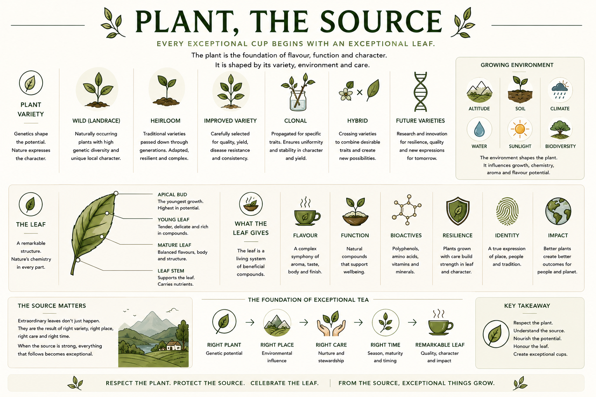

The plant is the foundation of flavour, function, and character. It is shaped by its variety, environment, and care. This section covers the spectrum of plant variety types — from wild landrace to future varieties — and the anatomy of the leaf itself, from apical bud to leaf stem.

Reference image — Plant, The Source. Variety types, growing environment, leaf anatomy, and the leaf's contribution.
Naturally occurring coffee plants with high genetic diversity. Not selected or bred for commercial production — they express the full range of the species' potential and carry unique local character. Wild plants are important reference points for understanding what a variety is capable of in its native environment.
Traditional varieties passed down through generations of farming communities. Heirloom varieties are adapted to their local environment, often complex in flavour, and resilient without depending on external inputs. They carry the memory of a place and a practice.
Carefully selected varieties bred for specific qualities — yield, disease resistance, flavour consistency, or environmental adaptability. Citane uses Arabica Chandragiri, an improved variety selected for performance under Kerala growing conditions. Improved varieties trade some genetic diversity for predictability and reliability.
Plants propagated vegetatively from a single parent — cuttings or tissue culture — to ensure exact genetic uniformity. Clonal propagation ensures that every plant in a block expresses the same traits: consistency in leaf character, yield, and cup profile. Useful for commercial scale; limits genetic resilience.
The result of crossing two distinct varieties to combine desirable traits from both parents. Hybrids may bring together disease resistance from one parent and flavour complexity from another. First-generation hybrids are often vigorous; maintaining traits across generations requires careful management.
Varieties currently in development — bred for climate resilience, quality, and new expressions of flavour and function. As growing conditions shift globally, the development of robust future varieties becomes essential for the long-term viability of coffee leaf production.
See Environment — Climate Resilience →Shapes temperature patterns, growth rate, and flavour potential. Higher altitude generally means slower growth and concentrated compounds.
Full detail in Leaf Origin →Nutrition, pH, organic matter and microbial life feed the plant. Healthy soil is the invisible foundation of every quality leaf.
See Plant Care — Soil Health →The combined effect of temperature, rainfall, humidity, and seasonal patterns on the plant's growth, timing, and compound development.
Full detail in Leaf Origin →Adequate water sustains growth, compound formation, and cell structure. Too much or too little distorts quality. Water management is an active farm decision.
See Plant Care — Water Management →Light intensity drives photosynthesis and shapes leaf thickness, colour, and compound levels. Citane is a shade-grown product — filtered light is part of its character.
See Leaf Origin — Sunlight →The range of plant and animal life in and around the growing environment. High biodiversity supports pollinators, natural pest control, and soil health — all of which benefit leaf quality.
See Environment & Impact →The youngest growth at the tip of each branch — the first point of a new flush. The apical bud is the leaf at its most tender, highest in certain bioactive compounds, and most delicate to handle. In some traditions, this is the most prized part of the plant for brewing.
The leaves immediately below the apical bud — tender, delicate, and rich in active compounds. Young leaves have a bright flavour character and are more perishable than mature leaves. They require gentle processing and fast handling after harvest.
See Flush / Young Leaf →A fully expanded leaf with complete structure — balanced flavours, body, and a denser compound profile. Mature leaves are the primary material for most Buna processing pathways. They are more robust and forgiving in processing than young leaves.
See Mature Leaf →The short stalk connecting the leaf blade to the branch. The leaf stem carries water and nutrients between the branch and the blade. In processing, stems are sometimes removed to alter extraction behaviour; in others, they are retained as part of the whole-leaf character.
A complex interplay of aroma, taste, body, and finish. Coffee leaf flavour is distinct from both coffee and tea — it carries notes that are uniquely its own: vegetal brightness, sweetness, soft astringency, and a clean mineral finish in well-processed leaves.
See Flavour & Sensory →Natural compounds in the leaf that support wellbeing — including polyphenols, chlorogenic acids, mangiferin, and moderate caffeine. Function is a documented property of the leaf based on published research. It is not a health claim — it is a characteristic of the material.
Polyphenols, amino acids, vitamins, and minerals present in the coffee leaf. These compounds are influenced by variety, growing conditions, leaf stage, and processing method. Bioactives are the measurable evidence of what the leaf contains.
Plants grown with consistent, appropriate care build structural and chemical strength in their leaves. Resilient leaves withstand processing, hold their character through brewing, and deliver consistent cup quality batch after batch.
See Plant Care →The leaf as a true expression of place, people, and tradition. Identity is what makes Citane from Karavaloor different to coffee leaf from Sumatra or Ethiopia — not better or worse, but distinctly itself. Identity is the product of all origin factors combined.
Better plants create better outcomes for people and planet. Impact is the downstream consequence of the choices made at source — variety selection, care practices, harvest decisions. The leaf carries the impact of every decision made before it reached the cup.
See Environment & Impact →Extraordinary leaves do not just happen. They are the result of right variety, right place, right care, and right time. When the source is strong, everything that follows becomes exceptional. This is the core logic of Citane quality — built from the ground up, not rescued in processing.